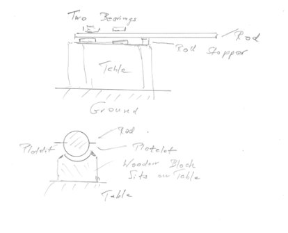
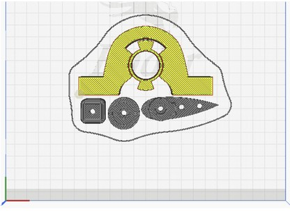
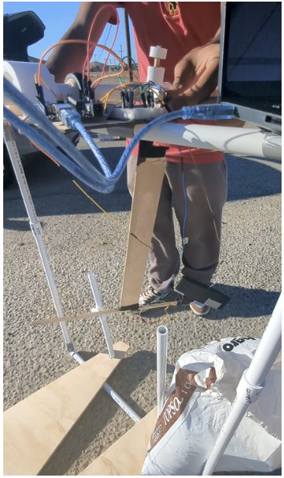
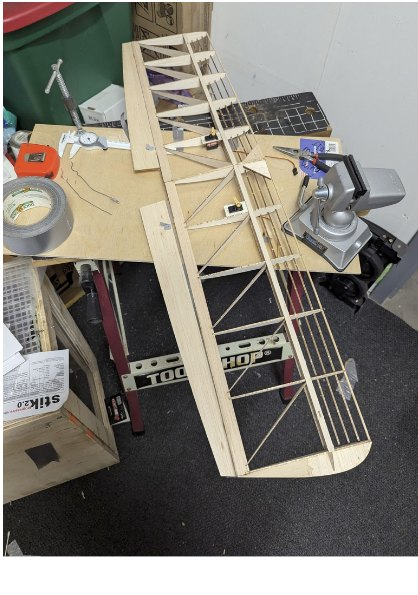
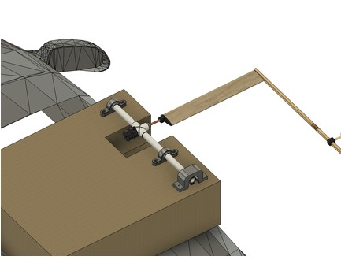
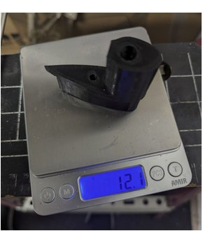
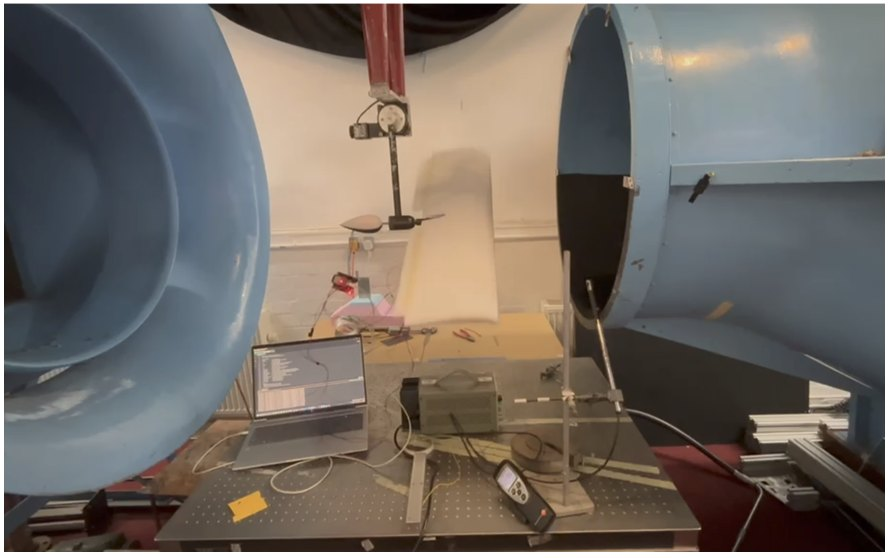

01 / 04 · AeroHydro Research and Technology Associates
Photos

Sketch work of a wing roll limiter implementation.

3D printed components displayed in UltiMaker Cura slicer.

Pendulum configuration oscillator testing at Altamont Pass, California, one of the largest wind farms in the United States.

Wooden frame of test wing made out of laser cut balsa. These test wings would be wrapped in monokote film and fastened to a roll rod using 3D printed couplers.

Concept CAD of a design mounted to the sun roof of a vehicle to allow for exposure to faster wind speeds than the custom wind tunnel could enable.

Wing coupler 3D printed out of nylon filament.

Photo taken by Marc Hinton, a graduate student member of an aerodynamics research group under Dr. Idil Fenercioglu of the University of Brighton. This team collaborates with AeroHydro Research and Technology Associates to reproduce testing results under a better instrumented university wind tunnel. Usage rights granted by their team.